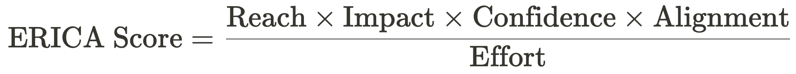
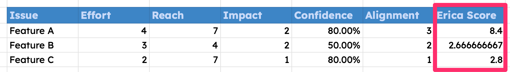

Prioritizing the right work is critical for maximizing efficiency and achieving strategic goals (that's generally true, but for my purposes, I'm speaking about the Product Management world). The RICE scoring system has been a popular choice for this, helping us evaluate which work to prioritize based on estimated reach, impact, confidence, and effort (if you're not familiar with RICE, the original write-up that describes what it is and how to use it can be found here: https://www.intercom.com/blog/rice-simple-prioritization-for-product-managers/). After living with RICE for some time, I've begun to see a few places where it can be honed.
Enter the ERICA framework—Effort, Reach, Impact, Confidence, and Alignment. As you might have guessed, ERICA is an adapted version of RICE that acknowledges our numbers as estimates and simplifies some of the math, while including a crucial fifth element: Alignment with organizational objectives.
Let's have a look at how ERICA works. Note that I will not get into the machinations of RICE too deeply. I'm assuming we all have at least a fly-by knowledge of how it works.
Effort (E)
Effort quantifies the total resources needed to complete this effort, typically measured in person-months, Sprints, or iterations. For ERICA, we will score effort between 1 and 5. This scale maps cleanly to t-shirt sizes (xs, s, m, l, xl) and can be easily adapted to weeks, Sprints, months, or whatever else your common measurement of time might be.
Reach (R)
Reach assesses how many people or transactions a project will affect within a specified timeframe. As mentioned before In ERICA I'm assuming our estimate is fairly broad, so we score it on a scale of 1 to 10. In our approach, 1 assumes an extremely targeted audience, and 10 represents the maximum possible reach. This might mean all current users, total addressable market, or something else in your case. Note that this does not need to necessarily represent a simplification of the estimated number of people. As I mentioned before, a small number of paid users might carry as much or more weight as a large number of cold leads. Make this number make sense to you, but apply the same standard across each opportunity you are considering.
Impact (I)
Impact measures the potential effect of a project on those it reaches. Using a scale of 1 for minimal impact to 5 for very high impact, this metric evaluates the depth of an initiative's effect on users or operations. Whether it's enhancing user satisfaction, increasing revenue, or improving operational efficiency, high-impact projects often take precedence.
Confidence (C)
Our use of confidence is very similar to the historical RICE approach. It acts as something of a reality check against the shiny new opportunities we are introducing and can counteract our enthusiasm in cases when it might color our decision-making. In RICE we have 3 possible scores: 100%, 80%, and 50%. A confidence of 100% means this opportunity is fully validated. A score of 80% means high confidence and a score of 50% means this opportunity is unvalidated. Anything below 50% is a moonshot. In ERICA, we simplify these percentages to integers (meaning we have 10, 8, 5, and 1 instead of 100%, 80%, and 50%), and 1 for moonshot opportunities.
Alignment (A)
Alignment is a new data point in the ERICA framework and reflects how well an effort aligns with the strategic objectives of the company or team. Scored as 1 for unrelated, 2 for somewhat aligned, and 3 for directly supporting company goals, it ensures our planned work isn't just feasible and impacting, but also moves us in the right direction.
Similar to RICE, the formula for calculating your ERICA score integrates all five values for prioritization:
The main difference is that we are placing a greater emphasis on strategic alignment as a key to priority evaluation.
Imagine a software development company considering several new features for its product. Using the ERICA framework, it evaluates three potential projects:
1. Feature A: Automates an existing manual process.
2. Feature B: Adds a new but niche functionality.
3. Feature C: Updates the user interface with no new functionality (tech debt clean-up).
Calculating the ERICA scores, the company can quantitatively and qualitatively assess which feature aligns best with its resources and strategic objectives and make better-informed decisions (Feature A wins!).
Scores are much lower than when calculating RICE.
This is due to the adjusted reach value (1 - 10 rather than the estimated actual people).
Alignment makes a tremendous difference to the final ERICA score.
True, but in my opinion, this is the way it should work regardless of whether you are using ERICA or not.
In a nutshell, the ERICA framework builds on RICE prioritization by incorporating alignment with organizational objectives, ensuring we're truly considering opportunities that not only promise high returns but also advance our key goals. Finally, I want to acknowledge that I am standing on the shoulders of giants here. RICE was (and remains) a highly valuable tool, and ERICA would not exist, and would never have been considered, without RICE. Thank you, Intercom and Sean McBride!
I hope ERICA is helpful to you. If you see ways to make it better that I haven't mentioned here, I would love to hear from you.
@ 2024 Jon La Plante. All rights reserved.